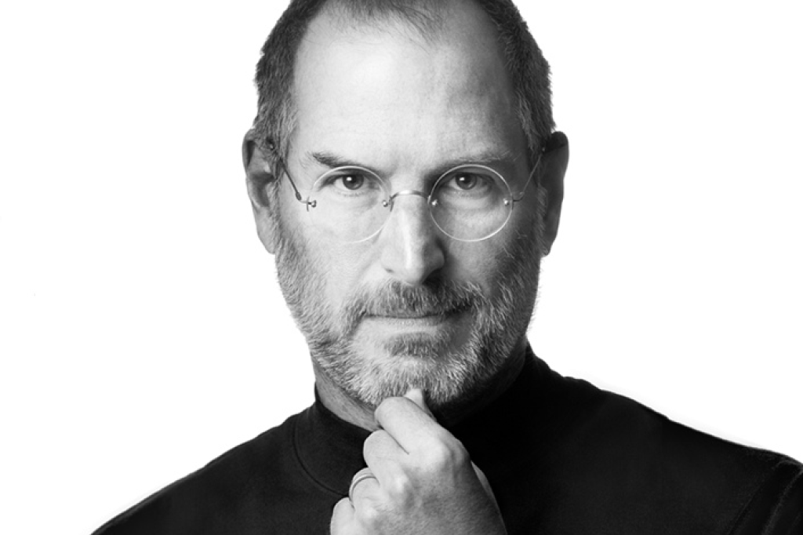

Bill Gates

Bill Gates, nascido em 1955, é um empresário, programador e filantropo americano, cofundador da Microsoft, que revolucionou o mercado de computadores pessoais. Após sua carreira na Microsoft, tornou-se um dos maiores filantropos do mundo através da Fundação Bill e Melinda Gates, dedicando-se a resolver problemas globais como doenças e pobreza. Nascimento e Juventude: William Henry Gates III nasceu em Seattle, Washington, em 28 de outubro de 1955, filho de um advogado e de uma professora. Com 17 anos, desenvolveu um software com Paul Allen e co-fundou a Traf-o-Data. A Microsoft: Fundada em 1975, foi crucial no sucesso do MS-DOS e do IBM PC, e Gates foi essencial no desenvolvimento do Windows. Filantropia: Fundação Bill e Melinda Gates, combate à pobreza e doenças globais. Atualmente: Investimentos em tecnologia e energia renovável. Gates é considerado um dos maiores empreendedores e filantropos da história.
Steve Jobs

Steven Paul Jobs foi inventor, empresário e magnata norte-americano, cofundador, presidente e CEO da Apple Inc., revolucionando indústrias como computadores, animação, música, telefones e tablets. Também foi CEO da Pixar e acionista máximo da Disney. Jobs faleceu em 5 de outubro de 2011, aos 56 anos, devido a câncer pancreático. Carreira: Desenvolveu o Apple II, Macintosh, NeXT e iMac G3. Após sair da Apple em 1985, fundou a NeXT e retornou em 1996. O filme biográfico "Steve Jobs" (2015) retrata sua vida e conquistas.
Linus Torvalds

Linus Torvalds nasceu em Helsínquia, Finlândia, em 1969, filho de jornalistas, e começou seu interesse por computadores com um Commodore VIC-20. Criou o Linux, um sistema operacional livre e open source. Linus é casado com Tove Torvalds e tem três filhas. Defende o ateísmo e a liberdade de software, tendo se tornado cidadão americano em 2010. Sua contribuição para tecnologia e software livre é mundialmente reconhecida.